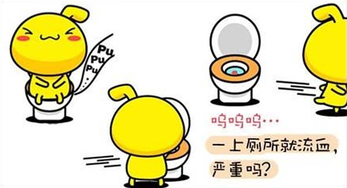

大便有血是怎么回事?
12月12日08:05
作者：肛泰小白
温馨提示
为了节省您的浏览时间，方面间内容简短,有任何疑问，可直接咨询在线专家
杨凤伶主任
16"
*视频很短已经过压缩处理，不用担心流量问题
自己判断疾病，不如在线问问医生在线咨询
大便出血最常见的病因有哪些？
1.痔疮：大便带血一般发生在排便过程中或便后，呈滴血或喷射状，血色鲜红与粪便不混合。
2.肛裂：肛裂导致的大便带血，血色鲜红，滴出或手纸擦后有血迹，且便后有肛门剧烈痛疼。
3.直肠息肉：血色鲜红、微痛、血与大便不混合。
4.溃疡性结肠炎：出血混有黏液或呈脓血便，伴有腹痛、发热、便频等 。
5.直肠癌：血色鲜红或暗红，呈滴状附于大便表面，晚期常出现脓血便并伴有肛门直肠下坠等。
文章太长不想看，听听医生怎么说长期便血的危害
①首先长期慢性出血可以导致贫血,贫血会引起头晕。
②便血也是肠道肿瘤的早期信号,很多人以为便血就是痔疮，而忽略了潜在的肠肿瘤。
③引起便秘。因便血而强忍不便，使大便干燥引起便秘，形成恶性循环。
④污染内裤，引发瘙痒、湿疹等肛周疾病。女性便血易引发妇科疾病。
专业问答
问：电子肛肠镜检查痛苦吗?
答：电子肛肠镜检查是没有痛苦的?
问：检查前患者需要做哪些准备?
答：电子肛肠镜不同于传统肠镜检查，整个检查过程快速，来院前只要稍微吃清淡些的食物即可。
问：电子肛肠镜检查哪家医院好?
答：上海医博肛泰医院（医保定点医院）作为上海市肛肠科专业医院，根据病情提供专业的治疗方案，并为您的隐私保密。
*视频很短已经过压缩处理，不用担心流量问题
视频打不开？可以与医生电话沟通一键沟通
肛肠有问题，一定要去正规的专业 肛肠医院，肛门出血绝非小事，必须谨慎对待，找出病因是关键.
>>>还没确定病因？点击排除自己是直肠癌便血！想确定便血的原因，通过专业医生以及专业设备的检查。医博肛泰医院引进的韩国电子肛门镜，采用国际先进的高达1200万像素的医用视频高清探头及摄像技术，具有视野清晰、零误差、检测精确、无痛等技术上的优越性。确诊病情后，医博肛泰采用领先的微创0痛感疗法，在现有技术的短时间内治疗疾病，缩短术后住院时间，减少术后可能出现的并发症。
今日已有37名患者
通过在线咨询医生解决了问题